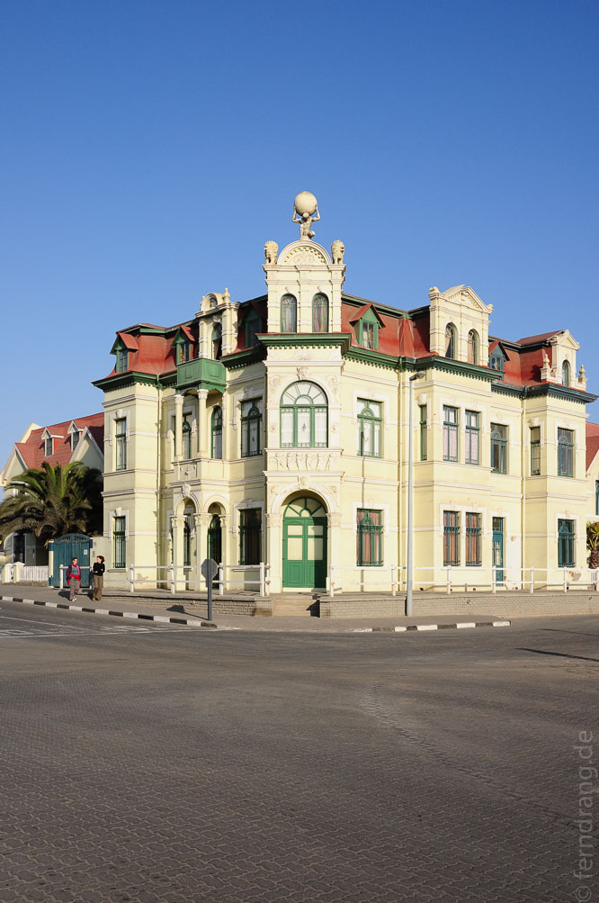
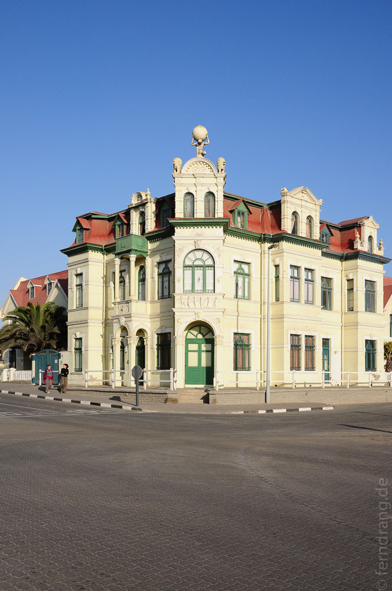

Genug Botswana. Vom Okavango ans Meer ist eine lange Strecke. Mit einem Zwischenstopp in Gobabis (etwas weniger trostlos als Ghanzi und Maun) sind wir zwei Tage lang grob gen Westen Richtung Swakopmund gefahren. Die Stadt liegt nicht nur am Meer, sondern auch in der Wüste. Irgendwo zwischen Maun und Swakop muss die Vegetation also wechseln. Wir hatten aber nicht damit gerechnet, dass es einfach stundenlang immer weniger werden würde. Zuerst sind die Bäume verschwunden, dann die Büsche kleiner geworden, unmerklich ist sandfarbenes Stroh durch strohfarbenen Sand ersetzt worden. Am Ende teilt sich die Welt in unten gelb und oben blau.
Kurz bevor Swakopmund wie eine Fata Morgana aus dem Nichts auftaucht und langsam von einem Schatten am Horizont zu einer Stadt wird, türmt sich ein Dünenstreifen aus der Ödnis auf. Noch unwirklicher wird die Szenerie durch den Nebel, der sich jeden Nachmittag über die Gegend legt. Waren wir in Botswana noch von der Sonne gelähmt worden, so fällt hier als erstes die Kälte auf. Wenn sich der Nebel wie ein feuchtes Tuch über die Stadt legt, wird es für eine Wüste erstaunlich frisch.
An diesem seltsamen Ort könnte keine seltsamere Stadt liegen. Das kann unmöglich Afrika sein. Von den "Konditorei"-Schildern und den vielen hässlichen Kirchen abgesehen, gibt es noch eine Menge Häuser aus deutscher Kolonialzeit. Was dem Ort aber seine geisterhafte Atmosphäre verleiht, ist die allgegenwärtige Blässe. Die Häuser sind ausgeblichen wie Buchrücken und die viel zu breiten Straßen menschenleer. Dazu kommt noch der Nebel und die ungünstige Vorliebe der Bewohner für fahles Gelb.
Die Touristen sind vorwiegend alt und deutsch, und die meisten scheinen sich im Cafe Anton beim Apfelstrudel wieder nach Hause zu träumen. Der Rest dieser anämischen Stadt wirkt verlassen und geisterhaft - die Einheimischen sind vor der Trostlosigkeit ins "Kunsthandwerk" geflohen und verkaufen ihren Tinnef an der toten Promenade.

 
